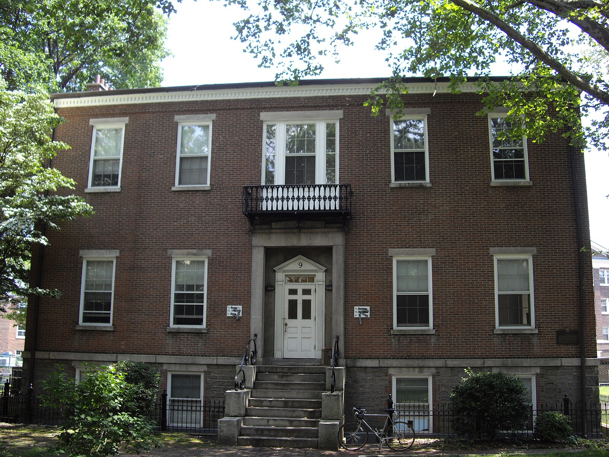
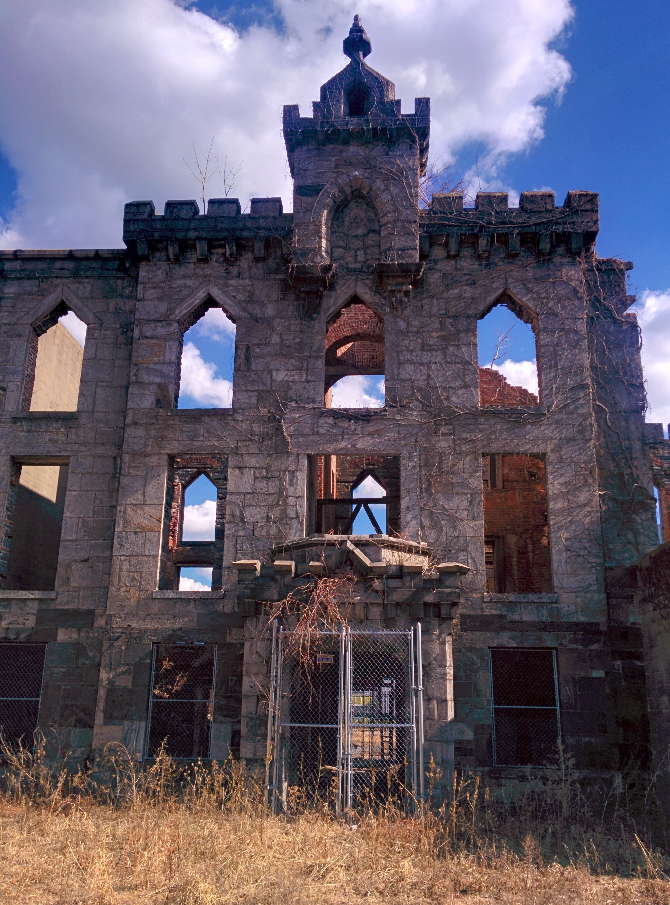

More on the Borough
Staten Island is located at the very southern tip of New York State.
Staten Island has several nicknames. One is "The Forgotten Borough." This name was used almost 100 years ago.
It became more popular during the 1990s when people wanted Staten Island to separate from New York City. It
was also used after Hurricane Sandy.
Another nickname is "the borough of parks." This is because of its many protected parklands and green spaces.
The island has 12,300 acres of parkland and over 170 parks.
The Staten Island Zoo is also on the island. It opened in 1936. It was the first zoo in the U.S. focused on
education. In the 1960s, it had the world's largest collection of
rattlesnakes.(https://kids.kiddle.co/Staten_Island).
The National Lighthouse Museum on Staten Island is a reminder of how lighthouses played an important role in
the security and well being of New York and the United States. The museum is located in one of the buildings
of the former lighthouse depot complex that dates back to 1862. The organization offers special events,
lectures and occasional boat tours to nearby lighthouses.
(https://nylandmarks.org/explore-ny/national-lighthouse-museum/).

The Block House
Over the years, it served various military functions, including a General's headquarters, officers'
quarters, and hospital. It was also briefly used as a military prison, which is where it earned its
"Block House" name.
It is home to the island's only public library, which features publications and periodicals on art,
architecture, and urban planning.
In 2021, the Institute for Public Architecture made the Block House its permanent home, restoring two of
the three stories for its programs. The building supports residencies for architects and artists and
serves as a venue for work-in-progress exhibitions, workshops, and lectures.
Reference: https://instituteforpublicarchitecture.org/About

Ellis Island National Museum of Immigration
The Ellis Island National Museum of Immigration opened in 1990. It tells the story of American
immigration. The museum has exhibits across three floors of the main building. You can see the baggage
room, the famous registry room, and old dormitory rooms. There are also theaters for films and
performances.
In 2001, the American Family Immigration History Center opened. It helps people research their family's
immigration history. In 2015, the museum was renamed the Ellis Island National Museum of Immigration.
This was to show that it covers the entire story of immigration to America, not just the years Ellis
Island was open.
Reference: https://kids.kiddle.co/Ellis_Island

Renwick Smallpox Hospital
This hospital was designed by a well-known architect named James Renwick Jr.. It opened in 1856 and could
hold 100 patients.
About 100 years after it opened, the hospital closed down. The building slowly fell apart and became a
ruin. In 1972, it was added to the National Register of Historic Places. Four years later, it became a
New York City Landmark. It is the only ruin in the city with this special landmark status.
Even though the building looks like a castle, which is called Gothic Revival style, the windows on the
third floor have pointed tops instead of curved ones. This was a bit unusual for that style.
Reference: https://kids.kiddle.co/Smallpox_Hospital

Staten Island Range Lighthouse
A 90-foot octagonal tower made of brick, stone, and iron, with a rusticated limestone base.
Shows a fixed white light visible for 18 miles. It was upgraded in 1939 with a 1,000-watt bulb and a
Fresnel range lamp. Completed in 1912 and designated a National Historic Landmark in 1968
(https://www.lighthousefriends.com/index.html).